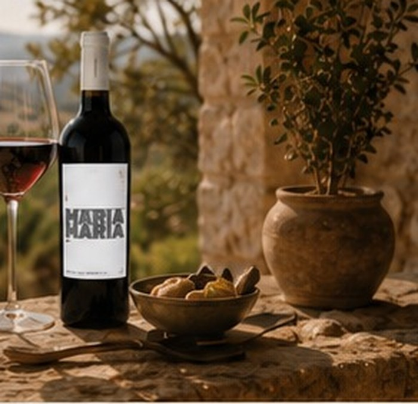
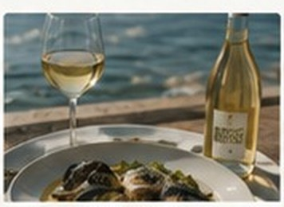
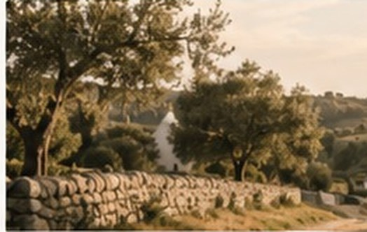

Weinwissen
Was passt zu Primitivo?
4 Min. Lesedauer
Tipps für harmonische Kombinationen mit Aromen, die begeistern.
Unser Magazin teilt Wissen über Wein, Inspiration für Genussmomente, kreative Food Pairing-Ideen, spannende Regionen und Geschichten aus der Welt von Maria Maria.
Mehr über unsere Philosophie
5 Min. Lesedauer
Warum die besonderen Momente oft ganz einfach sind – und wie Wein sie noch schöner macht.
Artikel lesenWeinwissen
4 Min. Lesedauer
Tipps für harmonische Kombinationen mit Aromen, die begeistern.

Food Pairing
4 Min. Lesedauer
Frische, Mineralität und feine Aromen im perfekten Zusammenspiel.

Regionen
6 Min. Lesedauer
Eine Reise in das Herz Süditaliens und seine unverwechselbaren Weine.
Geschichten
5 Min. Lesedauer
Wie kleine Rituale mit einem guten Glas Wein besonders werden.
Genussmomente
3 Min. Lesedauer
Leichte Gerichte, gute Gespräche und der richtige Wein dazu.